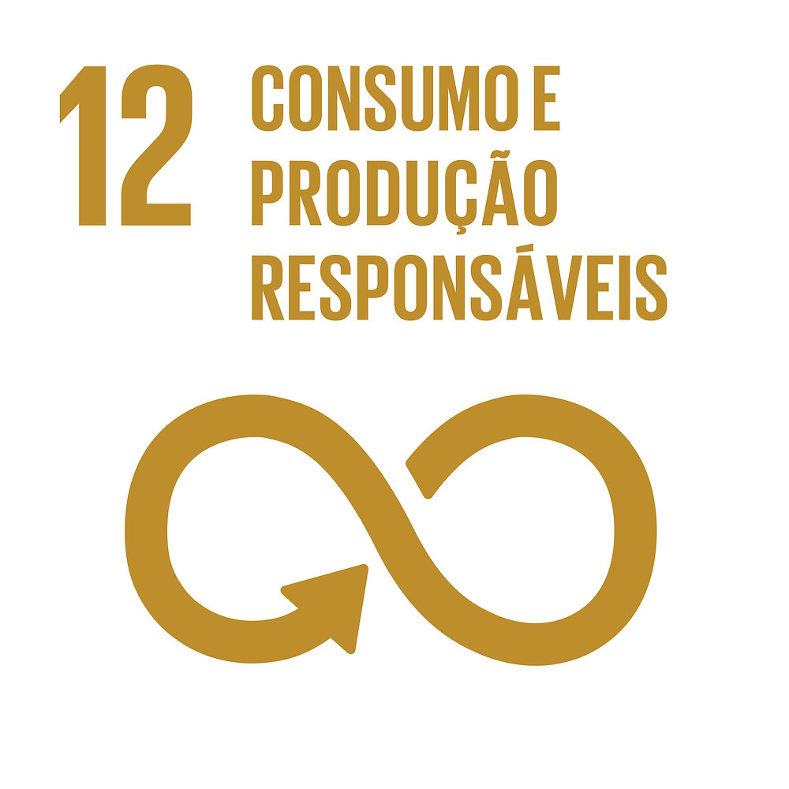

- Email: murilodahmer@alunos.utfpr.edu.br
- LinkedIn: Murilo Silva
- GitHub: MuriloSlva
- Cornélio Procópio, Paraná
Resumo
Sou estudante de Engenharia de Software na UTFPR, com interesse em desenvolvimento de software e foco atual no desenvolvimento back-end.
Atualmente, aprofundo meus conhecimentos em JavaScript, Node.js, Express.js e desenvolvimento de APIs, além de possuir formação em HTML e CSS para criação de interfaces web.
ODS que pretendo contribuir

Habilidades
- Ecossistema JavaScript
- Java e Programação Orientada a Objetos
- HTML e CSS
- Bancos de Dados Relacionais e NoSQL
Formação
- Bacharelado em Engenharia de Software
- UTFPR-CP
- 2025 - 2028
Hobbies
- Lifestyle Wellness
- Quadrinhos
- Perfumes
- Música
Links Adicionais
- Instagram: @murilodslv